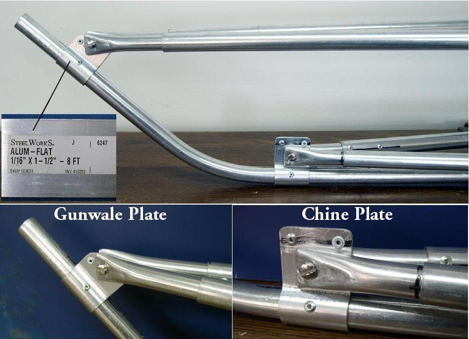

| Aluminum Stem / Stern Brackets (Alternative) | Menu Previous Page Next Page |
|
 Alumium Stem Brackets - Aluminum brackets are an alternative to using HDPE stem plates. They are easy to make, but quite durable. Many aluminum frame Russian folders use this type bracket. The 1/16" aluminum flat plate is available at most hardware stores. The aluminum is bent around the stringer tubing using a vise to achieve the correct shape. More details on this process will be added soon. |
|